Every way there, side by side.
Tap the map button to see every way there at once: the ferry and the drive-around, each with when it gets you there and what it costs.
FerryOrNot compares the ferry against driving around, door to door, from where you are right now: live traffic, the boat you'd actually catch, the wait at the dock, and whether the drive-up deck will still have room.
Ten Washington State Ferries crossings across Puget Sound. Independent, not affiliated with WSF or WSDOT.
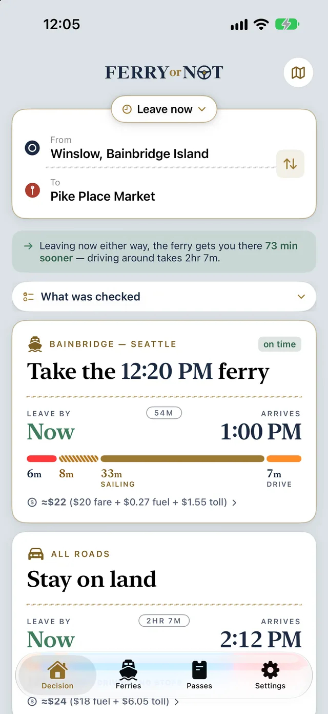
A real Wednesday, October 2026. The app recomputes every minute.
Bainbridge to Seattle is 33 minutes on the water or close to two hours around. Which one wins changes by the minute: I-5, a late boat, a cancelled sailing, and how many cars are already in the holding lanes.
WSF's own app shows the schedule and a space number. Map apps don't know when your boat is actually leaving, and none of them predict delays. Only FerryOrNot looks at your whole journey, in real time, and tells you the quickest option.
The app's answer: take the 1:15 PM ferry, 43 min sooner.
With live traffic on every drive.
Tap the map button to see every way there at once: the ferry and the drive-around, each with when it gets you there and what it costs.
The map zooms in on its four legs: the drive to the dock, the wait, the crossing, and the drive after. Each one is coloured, so you can see where the time goes.
Every drive bar is coloured by traffic along the route, with a line in plain words saying where it's slow. Traffic comes from Apple Maps.
The ferry option is four legs: the drive to the dock, the wait in line, the crossing, and the drive on the far side. The drive-around is one long leg with live traffic. The app times both from where you are and recommends one, with the confidence earned by analyzing months of ferry data.
Leaving now, take the 1:15 PM ferry, 43 min sooner.
Real readings from the app: two Thursday afternoons and a Monday night, September 2026. The live app recomputes every minute.
The default. Where you are, right now, both ways.
Plan the 4:30 departure with the boats and predicted traffic you can expect to actually find.
It works backwards: "leave by 3:40 to make it", and which boat that means.
Four clear settings from Conservative to Risky. On days when Edmonds–Kingston is down to one boat, plans leave extra room.
Every recommendation carries named checks, each individually answerable. The confidence you see is derived from them, never asserted separately. If there's a check the app couldn't run, it says so.
Every crossing the engine looked at, and the drive, each with its outcome and a one-clause reason. A real check from a Monday night.
WSF's drive-up number counts cars scanned at the booth against a schedule slot. When there are disruptions, that number quickly becomes unreliable. Our backend has watched every sailing on ten crossings, every minute, since summer 2026. Three things it found:
Published 37% full. Actually over capacity.
When a boat fills or is cancelled, the cars already through the booth spill onto the next sailing, and their app's number for that sailing doesn't include them. FerryOrNot simulates the queue in physical order and says when WSF's number is misleading.
Their app stops at +5, but the boat is still loading.
WSF stops updating a sailing's count five minutes after its scheduled time, even when the boat is late and still taking cars. FerryOrNot's backend keeps counting and serves its own figure for exactly the time when WSF's app goes dark.
The next one sells out 54% of the time.
If the previous sailing sold out, the next one sells out about 54% of the time even when WSF's number still looks roomy. FerryOrNot warns; their app can't.
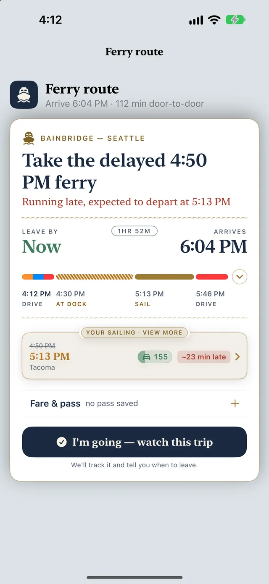
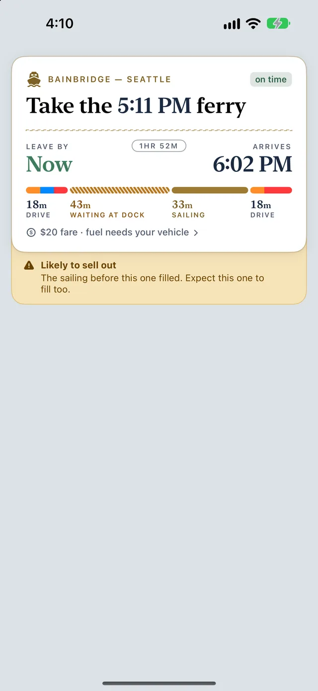
Measured on FerryOrNot's own telemetry across 18 route directions, summer–fall 2026. Space counts are advisory estimates, not guarantees.
Pick your boat, and from that moment the journey is checked continuously, in the app, on your Lock Screen and on your Apple Watch. If the answer changes, you hear about it. None of it leaves your phone.
A reminder that fires to the minute even if the app was closed. The card goes on your Lock Screen the moment you commit, with the boat, the deck count, and the leave-by time.
"You can't reach the dock in time" is worked out from where you actually are, not where you started. When a warning stops being true, the card says so: "your 7:05 works again." If the boat fills before you'd board, you hear that too, and the next option that still works.
As you approach the terminal, the Lock Screen card becomes your boarding pass: the real scannable QR, at tollbooth size, on the locked phone. No unlock, no tap.
Once you're on the boat, the card shows when you'll dock and arrive, the water and the tide, and the traffic on the drive ahead.
Send your arrival time from your journey in one tap.
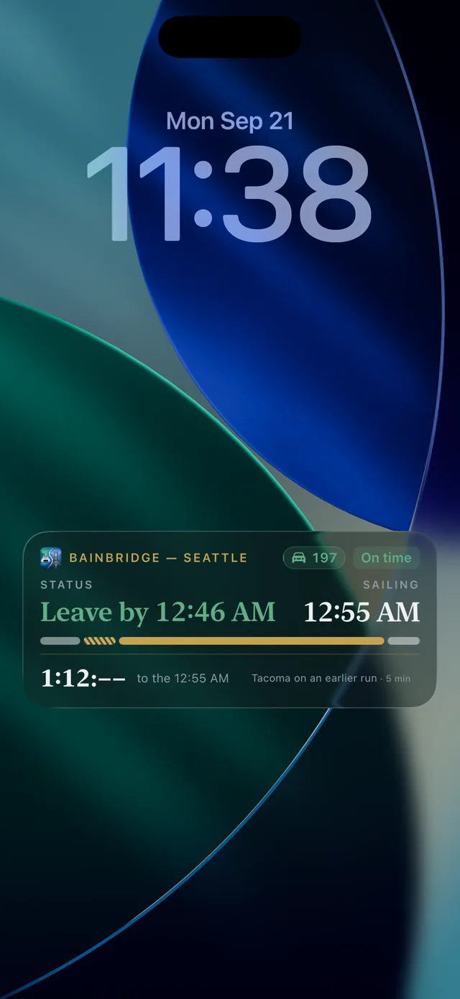
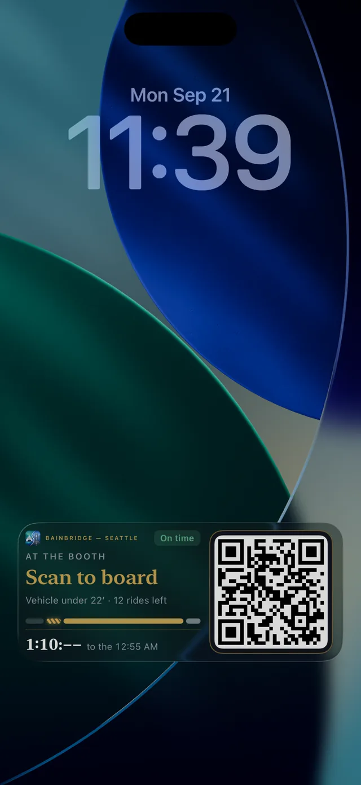
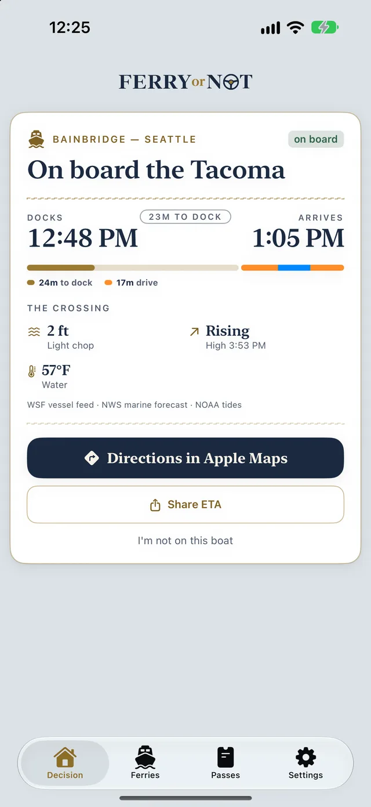
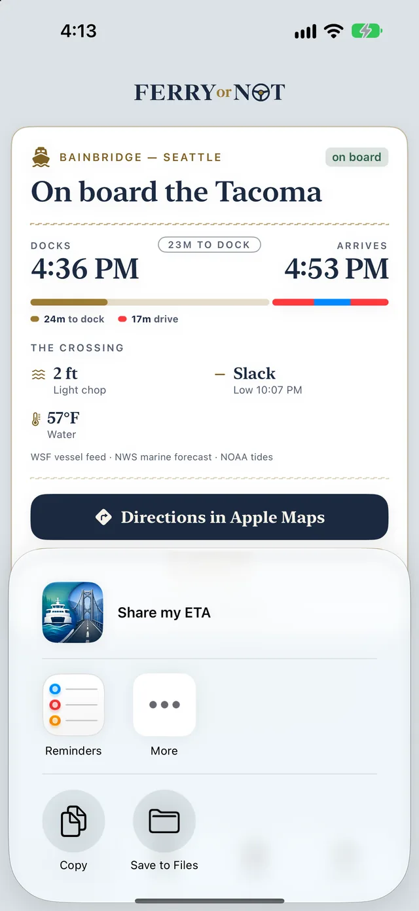
Your journey, your pass at the booth, the countdown to docking, and a clear warning when you can't make the boat.
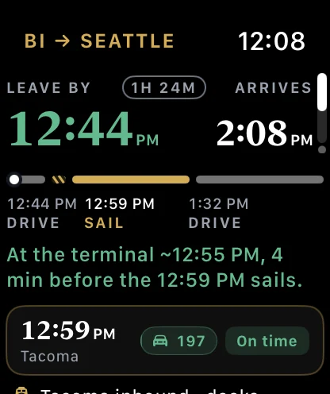
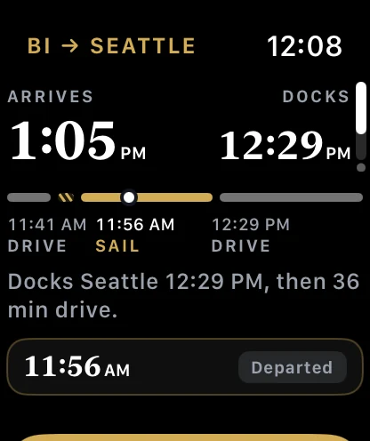
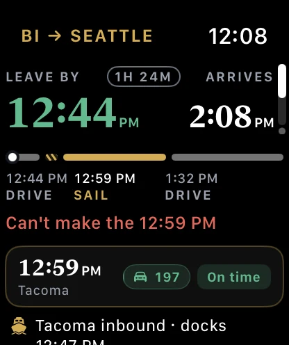
The Lock Screen frames show one sailing, the 12:55 AM from Bainbridge, on a September night. The pass QR codes are rehearsal codes; a real pass never appears on this site.
So there's no reason to keep a second one installed.
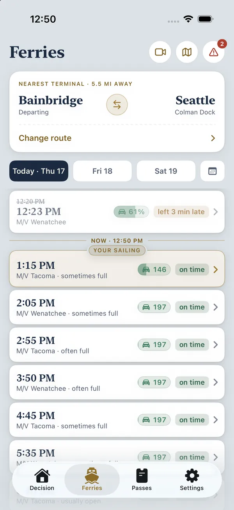
The whole dayEvery sailing on any crossing, with space on the right rail and late boats marked.
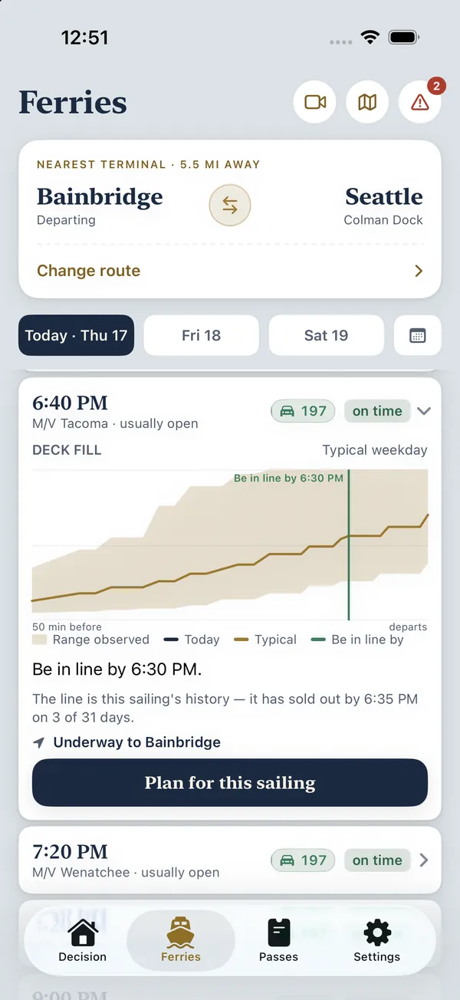
Open a sailingIts deck-fill curve against its own history, and "be in line by".
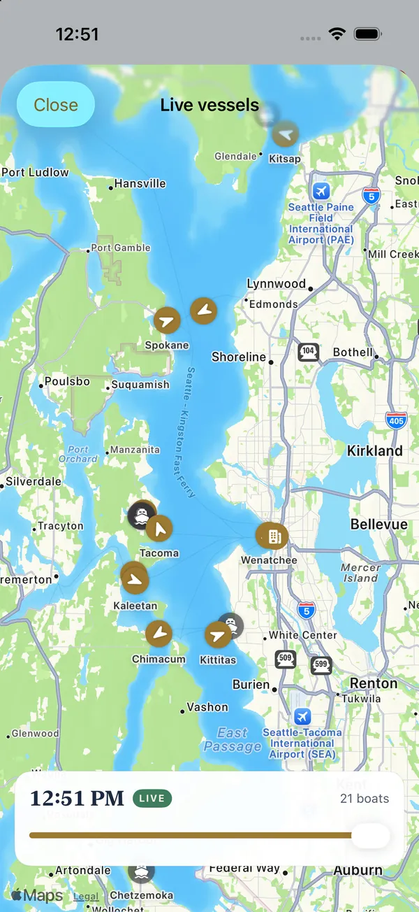
The fleetTwenty-one boats on a map, with a slider that scrubs the whole day.
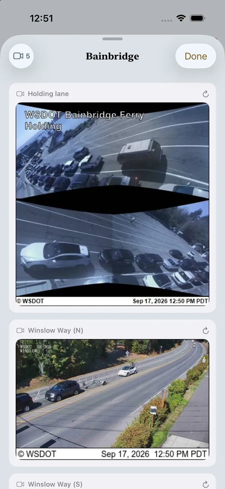
Terminal camerasWSDOT's holding-lane cameras, stamped with the minute they were taken.
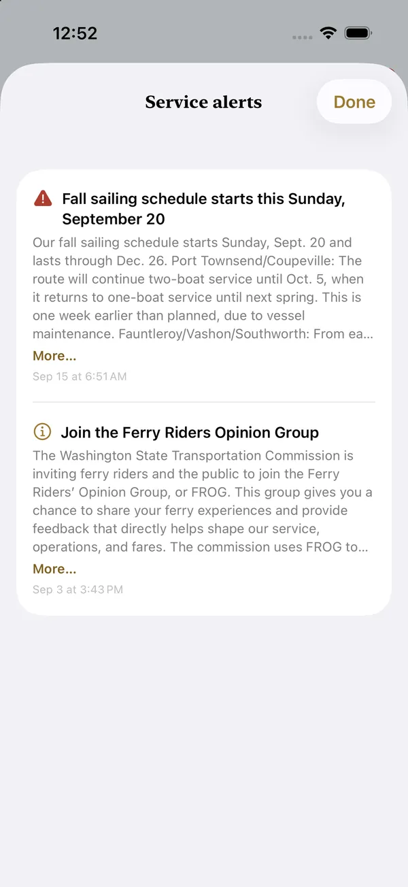
Service alertsWSF's bulletins, plus reduced-service cautions before specific cancellations post.
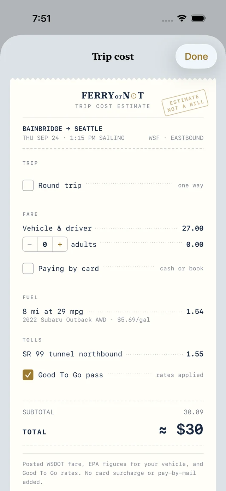
What the trip costsWSDOT's fare for the direction you sail, fuel from your own vehicle's EPA record, tolls read off the route. Nothing guessed.
The decision engine runs on the device. The backend only sends data down.
Everything above. No free tier, no ads, no upsells. Cancel in Settings any time.
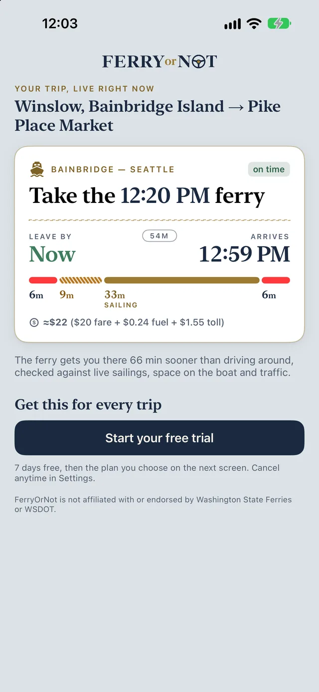
Try it on your own trip first.A short tour shows the live answer for a trip you choose, before you subscribe.
TestFlight builds don't charge. The subscription begins with the App Store release.
About 5¢ a day.
Less than six percent of one car fare a month.
Payment is charged to your Apple Account. The subscription renews automatically unless cancelled at least 24 hours before the end of the current period. Manage or cancel in Settings → your name → Subscriptions. Privacy Policy · Terms of Use
Because the comparison is the product. No free app answers "ferry or drive, from here, now", and the watch that follows a commitment isn't a lookup feature. The schedules, cameras and space counts are here too, so nothing is missing.
No. It's an estimate built from WSF's count and our queue model, and the app says when it's unsure. Never a guarantee.
It only watches while you have a journey under way, starting shortly before you need to leave. Nothing runs between trips.
The pass is cached, the timetable is on the phone, and the app says "Offline" rather than inventing a recommendation.
Port Townsend–Coupeville and the San Juans are covered for schedules and status. The app never promises a drive-up spot on a reservation sailing.
Ten crossings. Seven days free. Nothing about you leaves your phone.